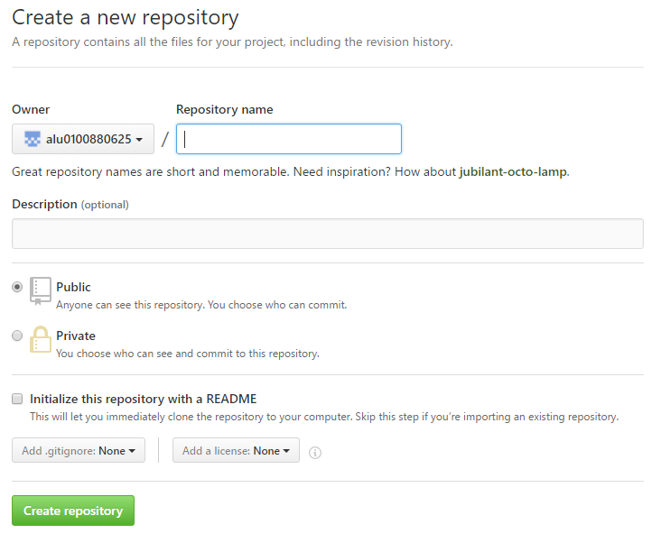
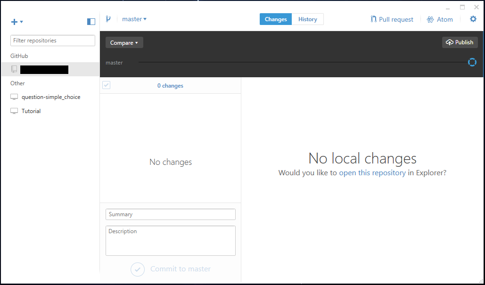

Github
¿Qué es?
Es una plataforma de desarrollo colaborativo que aloja proyectos utilizando el sistema de control de versiones de Git. Utiliza un framework Ruby on Rails.
¿Cómo podemos registrarnos?
Para registrarnos debemos seguir los siguientes pasos:
- Entrar en Github y rellenar un formulario como este:
- Nos llegará un correo de verificación que deberemos aceptar.
- Una vez verificada la cuenta ya podemos disfrutar de todas las ventajas que nos ofrece esta plataforma.
¿Cómo crear un repositorio?
Para crear un repositorio en Github debemos seguir los siguientes pasos: - Hacer pulsamos el botón que aparece en la siguiente imagen:
- Se nos abrirá un formulario como este: 
- Una vez lo rellenemos le damos a create repository.
- Y ya tenemos nuestro repositorio creado.
¿Que son los projects?
Los projects son tareas, etapas o pasos por los que pasa el proyecto, podemos consultarlos en la pestaña Projects de nuestro repositorio. Podemos crear, modificar, eliminar o borrar etapas y llevarlas a otro estado, un ejemplo simple sería: Para cambiar de un estado a otro, simplemente arrastramos.¿Qué son las issues?
Una issue es el reporte de una incidencia o fallo en el repositorio de un proyecto. Para crear una issue deberemos darle al botón issue de nuestro repositorio y veremos algo como esto: Una vez ahí rellenamos el título de la incidencia y en el comentario podemos referirnos a un commit concreto, asignárselo a una persona (en la parte derecha assignees), aplicar una categoría a la issue (labels, en la parte derecha). Una vez terminado le damos a Submit new issue.Github Desktop
Github Desktop es la versión de escritorio para el uso del control de versiones de Git. Esta opción es perfecta para los usuarios que no se manejan bien con los comandos en la terminal y prefieren una opción más gráfica y visual.

Para descargarla sólo basta con acceder a la página de descarga e instalar el ejecutable. Después ya podremos logearnos y comenzar a utilizar nuestra aplicación Git.
Hub
Hub es una herramienta de línea de comandos que envuelve git con el fin de ampliarlo con funciones y comandos adicionales que facilitan el trabajo con GitHub. Ejemplo:
$ hub clone rtomayko/tilt
# Se expande a:
$ git clone git://github.com/rtomayko/tilt.git
Instalación
Aquí podemos obtener el archivo de descarga para poder instalar hub en distintos sistemas operativos como OS X, Linux, Windows, FreeBSD. Para instalarlo desde la fuente de hub en git:
$ git clone https://github.com/github/hub.git
$ cd hub
$ make install prefix=/usr/local